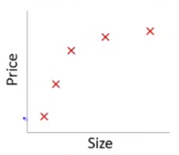
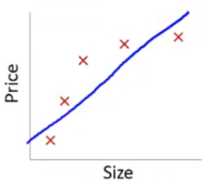
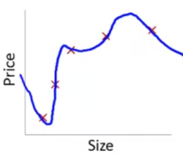
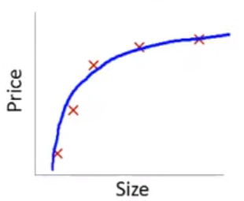
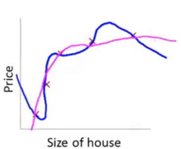
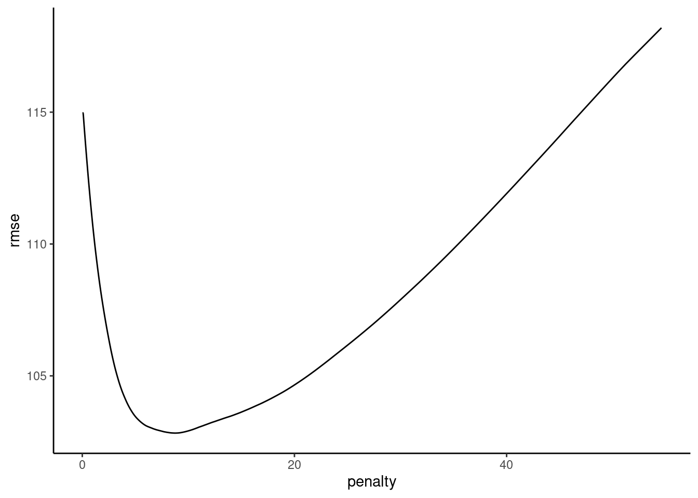
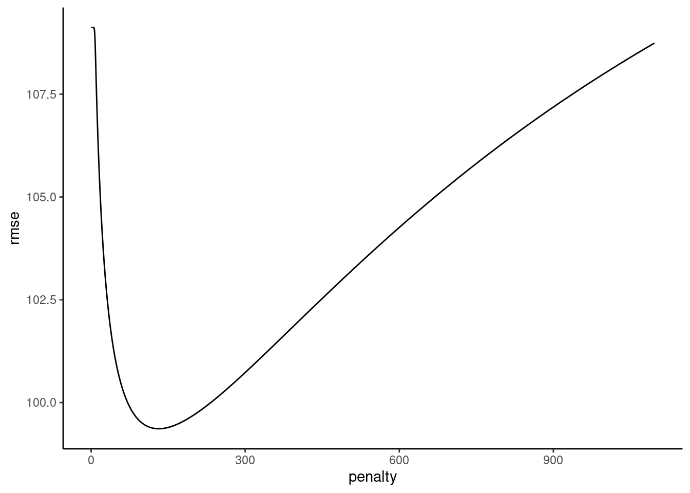
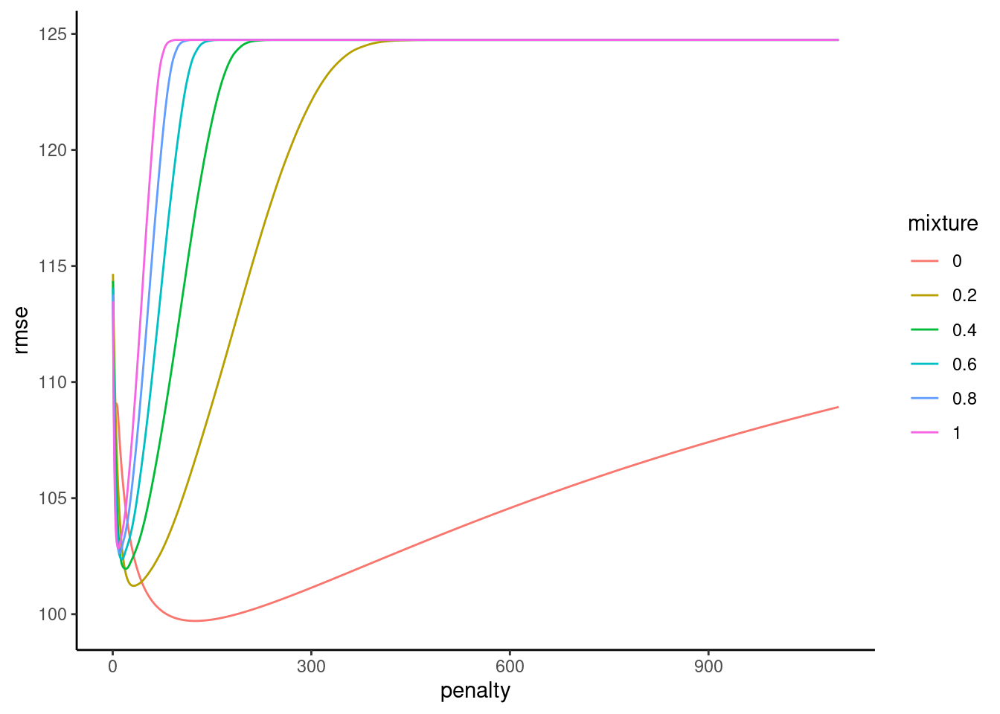

Show Answer
As lambda increases, the model becomes less flexible b/c its parameter estimates
become constrained/shrunk. This will increase bias but decrease variance for model
performance.Post questions to the readings channel in Slack
Post questions to the video-lectures channel in Slack
Submit the application assignment here and complete the unit quiz by 8 pm on Wednesday, February 28th
Complex (e.g., flexible) models increase the chance of overfitting to the training set. This leads to:
Complex models are difficult to interpret
Regularization is technique that:
Regularization does this by applying a penalty to the parametric model coefficients (parameter estimates)
We will consider three approaches to regularization
These approaches are available for both regression and classification problems and for a variety of parametric statistical algorithms
To understand regularization, we need to first explicitly consider loss/cost functions for the parametric statistical models we have been using.
A loss function quantifies the error between a single predicted and observed outcome within some statistical model.
A cost function is simply the aggregate of the loss across all observations in the training sample.
Optimization procedures (least squares, maximum likelihood, gradient descent) seek to determine a set of parameter estimates that minimize some specific cost function for the training sample.
The cost function for the linear model is the mean squared error (squared loss):
\(\frac{1}{n}\sum_{i = 1}^{n} (Y_i - \hat{Y_i})^{2}\)
No constraints or penalties are placed on the parameter estimates (\(\beta_k\))
They can take on any values with the only goal to minimize the MSE in the training sample
The cost function for logistic regression is log loss:
\(\frac{1}{n}\sum_{i = 1}^{n} -Y_ilog(\hat{Y_i}) - (1-Y_i)log(1-\hat{Y_i})\)
where \(Y_i\) is coded 0,1 and \(\hat{Y_i}\) is the predicted probability that Y = 1
Again, no constraints or penalties are placed on the parameter estimates (\(\beta_k\))
They can take on any values with the only goal to minimize the sum of the log loss in the training sample
This is an example from a series of wonderfully clear lectures in a machine learning course by Andrew Ng in Coursera.
Lets imagine a training set:

If we fit a linear model with size as the only feature…
\(\hat{sale\_price_i} = \beta_0 + \beta_1 * size\)
In this training set, we might get the model below (in blue)
This is a biased model (predicts too high for low and high house sizes; predicts too low for moderate size houses)
If we took this model to new data from the same quadratic DGP, it would clearly not predict very well

Lets consider the other extreme

This problem with overfitting and variance isn’t limited to polynomial regression.
We would have the same problem (perfect fit in training with poor fit in new val data) if we predicted housing prices with many features when the training N = 5. e.g.,
\(\hat{sale\_price_i} = \beta_0 + \beta_1 * size + \beta_2 * year\_built + \beta_3 * num\_garages + \beta_4 * quality\)
Obviously, the correct model to fit is a second order polynomial model with size

What if we still fit a fourth order polynomial but changed the cost function to penalize the absolute value of \(\beta_3\) and \(\beta_4\) parameter estimates?
Typical cost based on MSE/squared loss:
Our new cost function:
\([\frac{1}{n}\sum_{i = 1}^{n} (Y_i - \hat{Y_i})^{2}] + [1000 * \beta_3 + 1000 * \beta_4]\)
The only way to make the value of this new cost function small is to make \(\beta_3\) and \(\beta_4\) small
If we made the penalty applied to \(\beta_3\) and \(\beta_4\) large (e.g., 1000 as above), we will end up with the parameter estimates for these two features at approximately 0.
With a sufficient penalty applied, their parameter estimates will only change from zero to the degree that these changes accounted for a large enough drop in MSE to offset this penalty in the overall aggregate cost function.
\([\sum_{i = 1}^{n} (Y_i - \hat{Y_i})^{2}] + 1000 * \beta_3 + 1000 * \beta_4\)

Of course, we don’t typically know in advance which parameter estimates to penalize.
In general, regularization produces models that:
These benefits are provided by the introduction of some bias into the parameter estimates
This allows for a bias-variance trade-off where some bias is introduced for a big reduction in variance of model fit
We will now consider three regularization approaches that introduce different types of penalties to shrink the parameter estimates
These approaches are available for both regression and classification problems and for a variety of parametric statistical algorithms
A fourth common regularized classification model (also sometimes used for regression) is the support vector machine (not covered in class but commonly used as well and easy to understand with this foundation)
Each of these approaches uses a different specific penalty, which has implications for how the model performs in different settings
The cost function for Ridge Regression is:
It has two components:
This penalty:
\(\frac{1}{n}([\sum_{i = 1}^{n} (Y_i - \hat{Y_i})^{2}] + [\:\lambda\sum_{j = 1}^{p} \beta_j^{2}\:])\)
\(\frac{1}{n}([\sum_{i = 1}^{n} (Y_i - \hat{Y_i})^{2}] + [\:\lambda\sum_{j = 1}^{p} \beta_j^{2}\:])\)
Lets compare Ridge regression to OLS (ordinary least squares with squared loss cost function) linear regression
Ridge parameter estimates are biased but have lower variance (smaller SE) than OLS
Ridge may predict better in new data
Ridge regression (but not OLS) allows for p > (or even >>) than n
Ridge regression (but not OLS) accommodates highly correlated (or even perfectly multi-collinear) features
OLS (but not Ridge regression) is scale invariant
\(\frac{1}{n}([\sum_{i = 1}^{n} (Y_i - \hat{Y_i})^{2}] + [\:\lambda\sum_{j = 1}^{p} \beta_j^{2}\:])\)
Unless the features are on the same scale to start, you should standardize them for all applications (regression and classification) of Ridge (and also LASSO and elastic net). You can handle this during feature engineering in the recipe.
LASSO is an acronym for Least Absolute Shrinkage and Selection Operator
The cost function for LASSO Regression is:
It has two components:
This penalty:
With respect to the parameter estimates:
LASSO yields sparse solution (some parameter estimates set to exactly zero)
Ridge tends to retain all features (parameter estimates don’t get set to exactly zero)
LASSO selects one feature among correlated group and sets others to zero
Ridge shrinks all parameter estimates for correlated features
Ridge tends to outperform LASSO wrt prediction in new data. There are cases where LASSO can predict better (most features have zero effect and only a few are non-zero) but even in those cases, Ridge is competitive.
Does feature selection (sets parameter estimates to exactly 0)
More robust to outliers (similar to LAD vs. OLS)
Tends to do better when there are a small number of robust features and the others are close to zero or zero
The Elastic Net blends the L1 and L2 penalties to obtain the benefits of each of those approaches.
We will use the implementation of the Elastic Net in glmnet in R.
You can also read additional introductory documentation for this package
In the Gaussian regression context, the Elastic Net cost function is:
This model has two hyper-parameters
As before (e.g., KNN), best values of \(\lambda\) (and \(\alpha\)) can be selected using resampling using tune_grid()
The grid needs to have crossed values of both penalty (\(lambda\)) and mixture (\(alpha\)) for glmnet
expand_grid()For the second example, we will simulate data with:
Set up simulation parameters
n_cases_trn <- 100
n_cases_test <- 1000
n_x <- 20
covs_x <- 50
vars_x <- 100
b_x <- rep(c(1,0), each = n_x / 2)
y_error <- 100mu <- rep(0, n_x)
sigma <- matrix(0, nrow = n_x, ncol = n_x)
for (i in 1:(n_x/2)){
for(j in 1:(n_x/2)){
sigma[i, j] <- covs_x
}
}
for (i in (n_x/2 + 1):n_x){
for(j in (n_x/2 + 1):n_x){
sigma[i, j] <- covs_x
}
}
diag(sigma) <- vars_x Simulate predictors and Y
set.seed(2468)
x <- MASS::mvrnorm(n = n_cases_trn, mu, sigma) |>
magrittr::set_colnames(str_c("x_", 1:n_x)) |>
as_tibble()
data_trn_2 <- x |>
mutate(y = rowSums(t(t(x)*b_x)) + rnorm(n_cases_trn, 0, y_error)) |>
glimpse()Rows: 100
Columns: 21
$ x_1 <dbl> -1.4627996, -1.8160400, 2.9068102, -6.5569418, -8.0480270, 9.2138…
$ x_2 <dbl> 17.7272165, 0.6310498, 9.7749301, -9.7193778, -4.3778964, 6.72976…
$ x_3 <dbl> -0.5051625, -17.7689516, 6.3105699, -10.5572604, -3.9617496, 3.90…
$ x_4 <dbl> 3.281062, 8.955012, 3.352868, -11.268461, -4.286181, 13.815268, -…
$ x_5 <dbl> 8.35180401, 6.81665987, 0.06645588, -9.66213146, -8.85459170, 16.…
$ x_6 <dbl> -5.9821809, 18.5962999, -0.8264266, 1.4451062, -9.3772084, 14.342…
$ x_7 <dbl> -12.40624948, 4.28231426, 1.53437679, 5.47908047, -4.77878760, 15…
$ x_8 <dbl> 3.479352, -7.562426, 16.716015, -4.841876, 1.927100, 27.236838, 1…
$ x_9 <dbl> 1.102297, 1.638666, 10.573017, 5.936702, 2.084463, 11.768179, 5.7…
$ x_10 <dbl> -6.6174049, 9.8993606, 5.6307484, 5.7061525, -12.3675238, 0.64541…
$ x_11 <dbl> -0.797748528, -18.721814405, -3.992559581, -21.480685628, -4.0253…
$ x_12 <dbl> 6.7928298, -7.3322948, -5.8933992, -13.0153958, 2.4618048, -12.34…
$ x_13 <dbl> -5.68712456, -1.01785876, 7.86559179, -18.79422479, -3.31514615, …
$ x_14 <dbl> -9.99575229, -16.35133901, -18.02068048, -26.14924286, 1.46020815…
$ x_15 <dbl> -4.2672643, -4.4350928, -13.6207539, -15.1147495, -5.5577594, -13…
$ x_16 <dbl> 8.5520238, -2.5639516, 5.5768023, -19.1732900, -4.1939131, 0.7558…
$ x_17 <dbl> 4.93829278, -14.17190979, -10.23808120, -8.90013599, -9.33297489,…
$ x_18 <dbl> -1.987745, -9.259699, -13.225873, -28.090077, -13.168306, -1.3565…
$ x_19 <dbl> 1.5085562, -13.9721276, -5.6622726, -10.9398210, -22.5233973, -8.…
$ x_20 <dbl> 1.2541564, -19.0101170, -1.6780834, -16.9207862, -7.2618287, 1.13…
$ y <dbl> -94.94590, 69.75956, 88.46711, 15.72162, 145.49463, 101.30513, 10…x <- MASS::mvrnorm(n = n_cases_test, mu, sigma) |>
magrittr::set_colnames(str_c("x_", 1:n_x)) |>
as_tibble()
data_test_2 <- x |>
mutate(y = rowSums(t(t(x)*b_x)) + rnorm(n_cases_test, 0, y_error)) |>
glimpse()Rows: 1,000
Columns: 21
$ x_1 <dbl> -11.082333, 10.623468, -7.962704, -4.360526, 4.170808, -8.056227,…
$ x_2 <dbl> 4.4892149, 6.5181854, 7.4099931, 5.1254868, 12.7502461, -9.275426…
$ x_3 <dbl> -3.94113759, 2.65646872, -0.10913588, 13.39114437, 12.99616116, 3…
$ x_4 <dbl> -17.3732360, 2.6196690, -6.8545899, 3.6877167, 9.5982646, 7.09623…
$ x_5 <dbl> 2.1853683, 25.4130435, 0.2749666, 3.9995128, 16.5471387, 9.649271…
$ x_6 <dbl> -13.8387545, -7.7514735, -1.0824170, -10.3723020, 13.3474819, -4.…
$ x_7 <dbl> -8.1371882, 14.0102608, 2.6593081, 5.2537524, 0.2673897, -5.48200…
$ x_8 <dbl> -22.8820028, 0.8089559, -2.8108121, 10.4672192, 10.9376332, 1.937…
$ x_9 <dbl> -20.8906202, 13.3578359, 19.4734781, 0.7248788, 7.3258207, 14.565…
$ x_10 <dbl> -18.2918851, 3.0034874, 5.3284673, -1.6321880, 5.1493291, 4.60337…
$ x_11 <dbl> 18.672349, 11.091231, 14.868589, 9.865558, 4.726164, 14.227183, 1…
$ x_12 <dbl> 5.5770933, 0.5463577, -9.0256983, 3.8787265, 9.8113720, -3.925492…
$ x_13 <dbl> -6.996611892, 19.551699340, 15.284866989, -2.964783803, 3.1004588…
$ x_14 <dbl> 21.031040, 13.320671, 18.770094, 10.911134, -0.382450, 18.983760,…
$ x_15 <dbl> -1.06370853, 14.64546199, -2.46018710, 3.09542088, -0.52366758, 8…
$ x_16 <dbl> -0.8450554, 17.3738247, 4.3254573, 12.7759481, 13.7785211, 13.078…
$ x_17 <dbl> 4.6867098, -1.5470071, 2.1471326, -9.5172721, 11.7413577, 6.54228…
$ x_18 <dbl> 6.3226155, 9.0624381, 0.5223122, 6.1315901, 5.0103132, 7.2802472,…
$ x_19 <dbl> 7.6803428, -2.6084423, 4.2716484, 22.0685295, 0.4731131, 8.255899…
$ x_20 <dbl> -5.4343168, -4.9070165, 13.5187641, 14.4286786, 8.4636535, 8.9575…
$ y <dbl> -83.529025, 83.571326, 86.073513, -95.654257, 79.326001, 114.5172…Set up a tibble to track model performance in train and test
error_ex2 <- tibble(model = character(), rmse_trn = numeric(), rmse_test = numeric()) |>
glimpse()Rows: 0
Columns: 3
$ model <chr>
$ rmse_trn <dbl>
$ rmse_test <dbl> Fit and evaluate the linear model
fit_lm_2 <-
linear_reg() |>
set_engine("lm") |>
fit(y ~ ., data = data_trn_2)
fit_lm_2 |>
tidy() |>
print(n = 21)# A tibble: 21 × 5
term estimate std.error statistic p.value
<chr> <dbl> <dbl> <dbl> <dbl>
1 (Intercept) -14.0 10.8 -1.30 0.198
2 x_1 -0.372 1.45 -0.256 0.798
3 x_2 3.54 1.39 2.55 0.0126
4 x_3 1.54 1.53 1.01 0.317
5 x_4 2.90 1.42 2.05 0.0441
6 x_5 2.98 1.50 1.98 0.0509
7 x_6 -1.28 1.34 -0.956 0.342
8 x_7 0.821 1.48 0.553 0.582
9 x_8 1.38 1.26 1.10 0.276
10 x_9 0.280 1.25 0.225 0.823
11 x_10 0.0247 1.33 0.0186 0.985
12 x_11 -2.09 1.56 -1.34 0.185
13 x_12 1.71 1.47 1.16 0.248
14 x_13 1.33 1.42 0.936 0.352
15 x_14 -0.927 1.24 -0.747 0.457
16 x_15 2.99 1.53 1.96 0.0536
17 x_16 -0.602 1.40 -0.431 0.668
18 x_17 1.78 1.28 1.39 0.168
19 x_18 -1.73 1.73 -1.00 0.321
20 x_19 -1.28 1.37 -0.938 0.351
21 x_20 -2.83 1.24 -2.28 0.0253Irreducible error was set by y_error (100)
(error_ex2 <- error_ex2 |>
bind_rows(tibble(model = "linear model",
rmse_trn = rmse_vec(truth = data_trn_2$y,
estimate = predict(fit_lm_2,
data_trn_2)$.pred),
rmse_test = rmse_vec(truth = data_test_2$y,
estimate = predict(fit_lm_2,
data_test_2)$.pred))))# A tibble: 1 × 3
model rmse_trn rmse_test
<chr> <dbl> <dbl>
1 linear model 83.4 117.For all glmnet algorithms, set up:
rec_2 <- recipe(y ~ ., data = data_trn_2) |>
step_normalize(all_predictors())
rec_prep_2 <- rec_2 |>
prep(data_trn_2)
feat_trn_2 <- rec_prep_2 |>
bake(NULL)
feat_test_2 <- rec_prep_2 |>
bake(data_test_2)
set.seed(20140102)
splits_boot_2 <- data_trn_2 |>
bootstraps(times = 100, strata = "y") Tune \(\lambda\) for LASSO
fits_lasso_2 <- xfun::cache_rds(
expr = {
linear_reg(penalty = tune(),
mixture = 1) |>
set_engine("glmnet") |>
tune_grid(preprocessor = rec_2,
resamples = splits_boot_2,
grid = grid_lasso,
metrics = metric_set(rmse))
},
rerun = rerun_setting,
dir = "cache/006/",
file = "fits_lasso_2")Plot hyperparameters
plot_hyperparameters(fits_lasso_2, hp1 = "penalty", metric = "rmse")
Fit best LASSO to full training set
fit_lasso_2 <-
linear_reg(penalty = select_best(fits_lasso_2)$penalty,
mixture = 1) |>
set_engine("glmnet") |>
fit(y ~ ., data = feat_trn_2)
fit_lasso_2 |>
tidy() |>
print(n = 21)# A tibble: 21 × 3
term estimate penalty
<chr> <dbl> <dbl>
1 (Intercept) 5.52 12.7
2 x_1 1.02 12.7
3 x_2 21.4 12.7
4 x_3 8.60 12.7
5 x_4 23.3 12.7
6 x_5 19.9 12.7
7 x_6 0 12.7
8 x_7 0 12.7
9 x_8 10.8 12.7
10 x_9 0.589 12.7
11 x_10 0 12.7
12 x_11 -0.632 12.7
13 x_12 0 12.7
14 x_13 0 12.7
15 x_14 0 12.7
16 x_15 0 12.7
17 x_16 0 12.7
18 x_17 0 12.7
19 x_18 0 12.7
20 x_19 0 12.7
21 x_20 -6.93 12.7Irreducible error was set by y_error (100)
(error_ex2 <- error_ex2 |>
bind_rows(tibble(model = "LASSO model",
rmse_trn = rmse_vec(truth = feat_trn_2$y,
estimate = predict(fit_lasso_2,
feat_trn_2)$.pred),
rmse_test = rmse_vec(truth = feat_test_2$y,
estimate = predict(fit_lasso_2,
feat_test_2)$.pred))))# A tibble: 2 × 3
model rmse_trn rmse_test
<chr> <dbl> <dbl>
1 linear model 83.4 117.
2 LASSO model 92.9 103.Tune \(\lambda\) for Ridge
fits_ridge_2 <- xfun::cache_rds(
expr = {
linear_reg(penalty = tune(),
mixture = 0) |>
set_engine("glmnet") |>
tune_grid(preprocessor = rec_2,
resamples = splits_boot_2,
grid = grid_ridge,
metrics = metric_set(rmse))
},
rerun = rerun_setting,
dir = "cache/006/",
file = "fits_ridge_2")Plot hyperparameters
plot_hyperparameters(fits_ridge_2, hp1 = "penalty", metric = "rmse")
plot_hyperparameters(fits_ridge_2, hp1 = "penalty", metric = "rmse")
Fit best Ridge to full training set
fit_ridge_2 <-
linear_reg(penalty = select_best(fits_ridge_2)$penalty,
mixture = 0) |>
set_engine("glmnet") |>
fit(y ~ ., data = feat_trn_2)
fit_ridge_2 |>
tidy() |>
print(n = 21)# A tibble: 21 × 3
term estimate penalty
<chr> <dbl> <dbl>
1 (Intercept) 5.52 132.
2 x_1 7.19 132.
3 x_2 14.7 132.
4 x_3 9.23 132.
5 x_4 14.6 132.
6 x_5 12.7 132.
7 x_6 4.12 132.
8 x_7 6.27 132.
9 x_8 9.75 132.
10 x_9 5.83 132.
11 x_10 5.18 132.
12 x_11 -6.65 132.
13 x_12 4.21 132.
14 x_13 3.84 132.
15 x_14 -2.49 132.
16 x_15 5.80 132.
17 x_16 -1.39 132.
18 x_17 4.19 132.
19 x_18 -5.07 132.
20 x_19 -5.88 132.
21 x_20 -8.57 132.Irreducible error was set by y_error (100)
(error_ex2 <- error_ex2 |>
bind_rows(tibble(model = "Ridge model",
rmse_trn = rmse_vec(truth = feat_trn_2$y,
estimate = predict(fit_ridge_2,
feat_trn_2)$.pred),
rmse_test = rmse_vec(truth = feat_test_2$y,
estimate = predict(fit_ridge_2,
feat_test_2)$.pred))))# A tibble: 3 × 3
model rmse_trn rmse_test
<chr> <dbl> <dbl>
1 linear model 83.4 117.
2 LASSO model 92.9 103.
3 Ridge model 90.6 102.Tune \(\lambda\) and \(\alpha\) for glmnet
fits_glmnet_2 <- xfun::cache_rds(
expr = {
linear_reg(penalty = tune(),
mixture = tune()) |>
set_engine("glmnet") |>
tune_grid(preprocessor = rec_2,
resamples = splits_boot_2,
grid = grid_glmnet,
metrics = metric_set(rmse))
},
rerun = rerun_setting,
dir = "cache/006/",
file = "fits_glmnet_2")Plot hyperparameters
plot_hyperparameters(fits_glmnet_2, hp1 = "penalty", hp2 = "mixture", metric = "rmse")
Fit Best glmnet in full train set
select_best(fits_glmnet_2)# A tibble: 1 × 3
penalty mixture .config
<dbl> <dbl> <chr>
1 132. 0 Preprocessor1_Model0368fit_glmnet_2 <-
linear_reg(penalty = select_best(fits_glmnet_2)$penalty,
mixture = select_best(fits_glmnet_2)$mixture) |>
set_engine("glmnet") |>
fit(y ~ ., data = feat_trn_2)
fit_glmnet_2 |>
tidy() |>
print(n = 21)# A tibble: 21 × 3
term estimate penalty
<chr> <dbl> <dbl>
1 (Intercept) 5.52 132.
2 x_1 7.19 132.
3 x_2 14.7 132.
4 x_3 9.23 132.
5 x_4 14.6 132.
6 x_5 12.7 132.
7 x_6 4.12 132.
8 x_7 6.27 132.
9 x_8 9.75 132.
10 x_9 5.83 132.
11 x_10 5.18 132.
12 x_11 -6.65 132.
13 x_12 4.21 132.
14 x_13 3.84 132.
15 x_14 -2.49 132.
16 x_15 5.80 132.
17 x_16 -1.39 132.
18 x_17 4.19 132.
19 x_18 -5.07 132.
20 x_19 -5.88 132.
21 x_20 -8.57 132.Irreducible error was set by y_error (100)
(error_ex2 <- error_ex2 |>
bind_rows(tibble(model = "glmnet model",
rmse_trn = rmse_vec(truth = feat_trn_2$y,
estimate = predict(fit_glmnet_2,
feat_trn_2)$.pred),
rmse_test = rmse_vec(truth = feat_test_2$y,
estimate = predict(fit_glmnet_2,
feat_test_2)$.pred))))# A tibble: 4 × 3
model rmse_trn rmse_test
<chr> <dbl> <dbl>
1 linear model 83.4 117.
2 LASSO model 92.9 103.
3 Ridge model 90.6 102.
4 glmnet model 90.6 102.Lets consider a typical explanatory setting in Psychology
Let’s pretend the previous 20 xs were your covariates
What are your options to test iv prior to this course?
You want to use covariates to increase power
BUT you don’t know which covariates to use
You might use all of them
Or you might use none of them (a clear lost opportunity)
Or you might hack it by using those increase your focal IV effect (very bad!)
NOW, We might use the feature selection characteristics for LASSO to select which covariates are included
There are two possibilities that occur to me
fit_lasso_2 |>
tidy() |>
print(n = 21)# A tibble: 21 × 3
term estimate penalty
<chr> <dbl> <dbl>
1 (Intercept) 5.52 12.7
2 x_1 1.02 12.7
3 x_2 21.4 12.7
4 x_3 8.60 12.7
5 x_4 23.3 12.7
6 x_5 19.9 12.7
7 x_6 0 12.7
8 x_7 0 12.7
9 x_8 10.8 12.7
10 x_9 0.589 12.7
11 x_10 0 12.7
12 x_11 -0.632 12.7
13 x_12 0 12.7
14 x_13 0 12.7
15 x_14 0 12.7
16 x_15 0 12.7
17 x_16 0 12.7
18 x_17 0 12.7
19 x_18 0 12.7
20 x_19 0 12.7
21 x_20 -6.93 12.7iv and the 11 covariates with non-zero effectsiv and covariates but don’t penalize ivpenalty.factor = rep(1, nvars) argument in glmnet()iviv (next unit)Should really conduct simulation study of both of these options (vs. all and no covariates).
These penalties can be added to the cost functions of other generalized linear models to yield regularized/penalized versions of those models as well. For example
L1 penalized (LASSO) logistic regression (w/ labels coded 0,1):
For L2 penalized (Ridge) logistic regression (w/ labels coded 0,1)
glmnet implements:
family = c("gaussian", "binomial", "poisson", "multinomial", "cox", "mgaussian")When to use which and why could I use raw predictors in simulated data example from lectures
What is Cost function?
Linear model
Ridge (L2)
LASSO (L1)
Elastic Net
The pros and cons of Lasso and Ridge vs. Elastic Net
I’m still a little confused as to why you would ever use Ridge or LASSO separately when you can just selectively use one or the other through elastic net. Wouldn’t it make sense to just always use elastic net and then change the penalty accordingly for when you wanted to use a Ridge or LASSO regression approach?
Some explanation why Lasso is more robust to outliers and ridge is more robust to measurement error would be appreciated.
I’m not very clear why LASSO could limit some parameters to be zero but ridge regression cannot. Can we go through this a bit?
How do you know what numbers to start at for tuning lamba (like in the code below)? I think John mentioned he has a function to find these, but I’m wondering if there are any rules of thumb.
How do we know how “strong” of a penalty we need to be applying to our cost function? Does the reduction in variance increase as we increase the strength of the penalty?
Is a decreased number of features always good or bad, or does it depend on the model/recipe
Can you talk more about how to interpret the scale of the parameter estimates? In the lecture you said the following and I’m not quite sure what that means:
I might be totally wrong but I wonder if we have to care about the multi-collinearity or high dimension on classification as well. Or this is only limited to regression and so we are solving with regularising only regression model?
Could you go over Forward, Backward, and Best Subset subsetting? I think I understand the algorithm they use, but I do not understand the penalty function they use for picking the “best” model. In the book, it looks like it uses R-squared to pick the best model, but wouldn’t the full model always have the greatest R-squared?
Is there a reason why we do not discuss variable selection using subset methods?
Is there specific cases when you would pick backwards or forwards selection, or is it up to the researcher?
Training vs. val/val error in stepwise approaches.
Use of AIC, BIC, Cp, and adjusted R2 vs. cross-validation
Can LASSO be used for variable selection when engaging in cross sectional data analysis to identify which variables in a large set of Xs are important for a particular outcome?
In practice, what elements should be considered before selecting IVs and covariates?